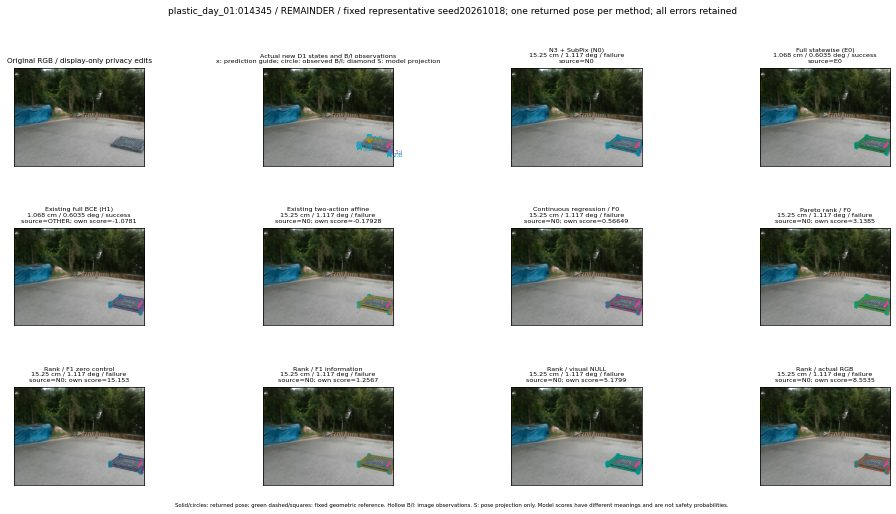

실선은 반환 자세, 초록 점선은 고정 기하 참조입니다. S는 영상 관측이 아닙니다. 점수는 모델별 의미가 다르며 보정된 안전 확률이 아닙니다. 개인정보 처리는 표시 사본에만 적용했습니다.
| 방법·seed | 위치 / 회전 / 공동성공 | 실제 출처 | 선택 후보 | 각 모델 자체 점수 |
|---|---|---|---|---|
| N0 | 15.25 cm / 1.117 deg / failure | N0 | N/A | N/A |
| E0 | 1.068 cm / 0.6035 deg / success | E0 | N/A | N/A |
| E0_REGENERATED | 1.068 cm / 0.6035 deg / success | E0 | E0_REGENERATED | N/A |
| POSEFIX_SUBPIX_PF_ANCHOR | 10.47 cm / 0.8368 deg / failure | OTHER | N/A | N/A |
| POSEFIX_SUBPIX_YOLO_ANCHOR | 10.47 cm / 0.8368 deg / failure | OTHER | N/A | N/A |
| D1_H1_MLP_s20261018 | 1.068 cm / 0.6035 deg / success | OTHER | G13/ORIGINAL_WD/endpoint/13 | -1.0781086683273315 |
| D1_H1_MLP_s20261019 | 1.068 cm / 0.6035 deg / success | OTHER | G13/ORIGINAL_WD/endpoint/13 | -1.265149712562561 |
| D1_H1_MLP_s20261020 | 1.068 cm / 0.6035 deg / success | OTHER | G13/ORIGINAL_WD/endpoint/13 | -1.1304187774658203 |
| D1_H1_PAIR_MLP_s20261018 | 15.25 cm / 1.117 deg / failure | N0 | N0 | -0.7100403308868408 |
| D1_H1_PAIR_MLP_s20261019 | 15.25 cm / 1.117 deg / failure | N0 | N0 | -0.32514262199401855 |
| D1_H1_PAIR_MLP_s20261020 | 15.25 cm / 1.117 deg / failure | N0 | N0 | 0.28661811351776123 |
| D1_H1_PAIR_ROLE_AFFINE_s20261018 | 15.25 cm / 1.117 deg / failure | N0 | N0 | -0.1792783886194229 |
| D1_H1_PAIR_ROLE_AFFINE_s20261019 | 15.25 cm / 1.117 deg / failure | N0 | N0 | -0.12227034568786621 |
| D1_H1_PAIR_ROLE_AFFINE_s20261020 | 15.25 cm / 1.117 deg / failure | N0 | N0 | -0.07729004323482513 |
| R_CONT_F0_s20261018 | 15.25 cm / 1.117 deg / failure | N0 | N0 | 0.5664908289909363 |
| R_CONT_F0_s20261019 | 15.25 cm / 1.117 deg / failure | N0 | N0 | 0.6113969683647156 |
| R_CONT_F0_s20261020 | 15.25 cm / 1.117 deg / failure | N0 | N0 | 0.5837723612785339 |
| R_ORDER_F0_s20261018 | 15.25 cm / 1.117 deg / failure | N0 | N0 | 3.138477087020874 |
| R_ORDER_F0_s20261019 | 15.25 cm / 1.117 deg / failure | N0 | N0 | 5.145242691040039 |
| R_ORDER_F0_s20261020 | 15.25 cm / 1.117 deg / failure | N0 | N0 | 3.5762224197387695 |
| R_ORDER_F1_ZERO_s20261018 | 15.25 cm / 1.117 deg / failure | N0 | N0 | 15.152691841125488 |
| R_ORDER_F1_ZERO_s20261019 | 15.25 cm / 1.117 deg / failure | N0 | N0 | 2.381333112716675 |
| R_ORDER_F1_ZERO_s20261020 | 15.25 cm / 1.117 deg / failure | N0 | N0 | 8.943544387817383 |
| R_ORDER_F1_s20261018 | 15.25 cm / 1.117 deg / failure | N0 | N0 | 1.2567033767700195 |
| R_ORDER_F1_s20261019 | 15.25 cm / 1.117 deg / failure | N0 | N0 | 6.549881935119629 |
| R_ORDER_F1_s20261020 | 15.25 cm / 1.117 deg / failure | N0 | N0 | 7.16916561126709 |
| V_ORDER_NULL_s20261018 | 15.25 cm / 1.117 deg / failure | N0 | N0 | 5.179880142211914 |
| V_ORDER_NULL_s20261019 | 15.25 cm / 1.117 deg / failure | N0 | N0 | 2.9716122150421143 |
| V_ORDER_NULL_s20261020 | 15.25 cm / 1.117 deg / failure | N0 | N0 | 8.26239013671875 |
| V_ORDER_RGB_s20261018 | 15.25 cm / 1.117 deg / failure | N0 | N0 | 8.553460121154785 |
| V_ORDER_RGB_s20261019 | 15.25 cm / 1.117 deg / failure | N0 | N0 | 3.394624948501587 |
| V_ORDER_RGB_s20261020 | 15.25 cm / 1.117 deg / failure | N0 | N0 | -1.4086637496948242 |